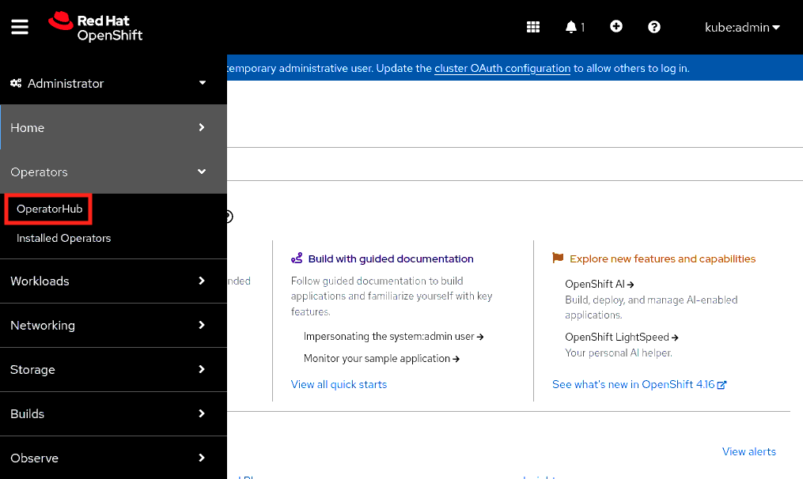
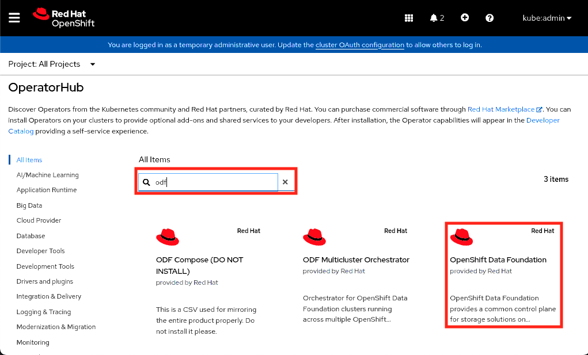
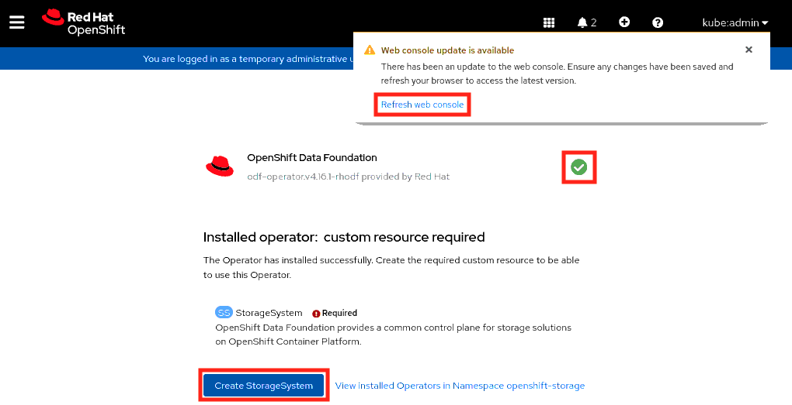
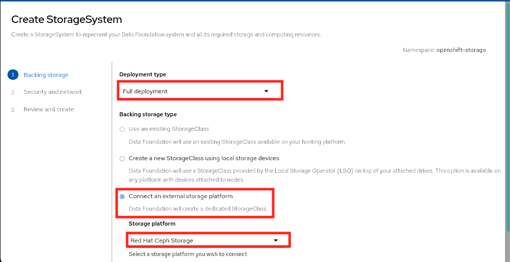
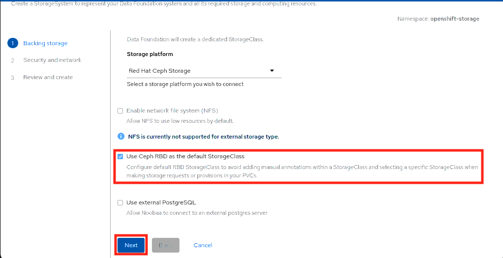
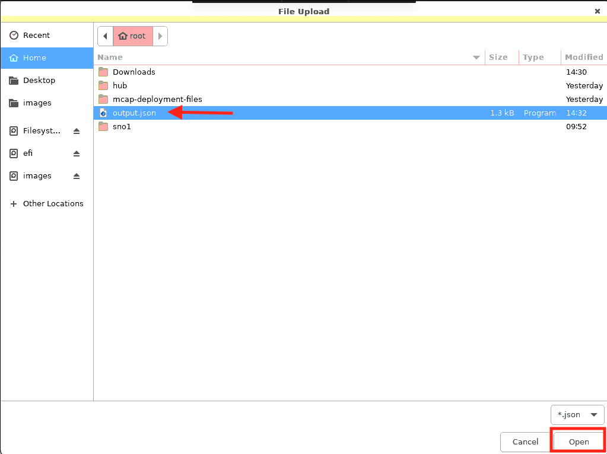
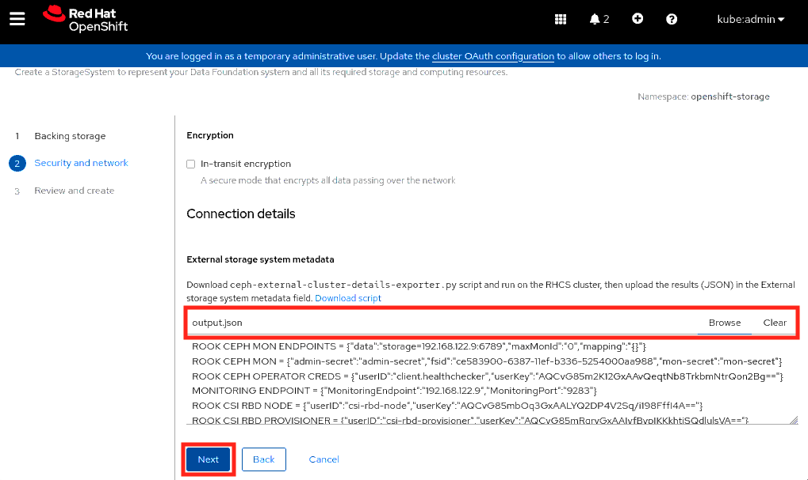
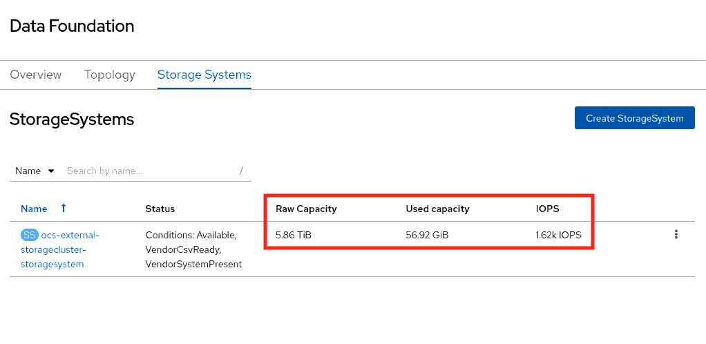
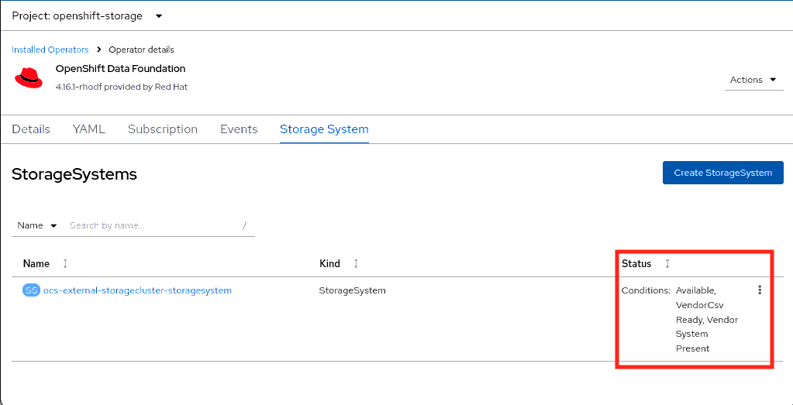

Install and Configure Operators
In this section, you will be installing the OpenShift Data Foundation operator on the Tenant cluster.

Prerequisites
-
Verify that the tenant cluster is deployed successfully.
-
Access the tenant cluster via CLI and the web console.
-
Ensure that all nodes are in
Readystatus and that all cluster operators are available.Sample output:[root@hypervisor ~]# oc get nodes NAME STATUS ROLES AGE VERSION tcn1.lab.example.com Ready control-plane,master,worker 15h v1.29.7+4510e9c tcn2.lab.example.com NotReady control-plane,master,worker 14h v1.29.7+4510e9c tcn3.lab.example.com Ready control-plane,master,worker 15h v1.29.7+4510e9c [root@hypervisor ~]# oc get clusterversion NAME VERSION AVAILABLE PROGRESSING SINCE STATUS version 4.16.8 True False 23h Cluster version is 4.16.8
Install OpenShift Data Foundation Operator
-
Access the operator hub from the web console of the tenant cluster.
From the left navigation pane, click .
 -
In a search window, search odf and select the
OpenShift Data Foundation. -
Click Install to open the install options.

-
Keep all options as is (with no change) in selected options and then click Install to install the operator.

-
After 3-4 minutes, you should notice a message telling you to the
Refresh web consolemessage on the window.First, refresh the web console and then click Create StorageSystem to create the resource.
 -
Create the StorageSystem.
-
Provide backing storage details.
Deployment type:
Full deployment.Select
Connect an external storage platform.Storage platform:
Red Hat Ceph Storage.Check the
Use Ceph RBD as the default StorageClassbox.Click Next to proceed.
 -
Click Browse to provide the content of the
output.jsonfile.
-
Select the
output.jsonfile and click Open. -
Click Next to proceed.
 -
Click Create StorageSystem to create the StorageSystem.

-
Note the raw and used capacity.
 -
Note the conditions as
Available, VendorCsv Ready, and Vendor System Present. -
Verify that the operator is installed successfully in
openshift-storagenamespace.
-
Configure the Image Registry Operator to use Noobaa storage with Red Hat OpenShift Data Foundation
| Configuring the Image Registry Operator to use Noobaa storage with Red Hat OpenShift Data Foundation |
-
Create the object bucket claim using the
openshift-storage.noobaa.iostorage class.cat <<EOF | oc apply -f - apiVersion: objectbucket.io/v1alpha1 kind: ObjectBucketClaim metadata: name: noobaatest namespace: openshift-storage spec: storageClassName: openshift-storage.noobaa.io generateBucketName: noobaatest EOF -
Get the bucket name by entering the following command:
bucket_name=$(oc get obc -n openshift-storage noobaatest -o jsonpath='{.spec.bucketName}') -
Get the AWS credentials by entering the following commands:
AWS_ACCESS_KEY_ID=$(oc get secret -n openshift-storage noobaatest -o yaml | grep -w "AWS_ACCESS_KEY_ID:" | head -n1 | awk '{print $2}' | base64 --decode)AWS_SECRET_ACCESS_KEY=$(oc get secret -n openshift-storage noobaatest -o yaml | grep -w "AWS_SECRET_ACCESS_KEY:" | head -n1 | awk '{print $2}' | base64 --decode) -
Create the secret
image-registry-private-configuration-userwith the AWS credentials for the new bucket underopenshift-image-registryproject by entering the following command:oc create secret generic image-registry-private-configuration-user --from-literal=REGISTRY_STORAGE_S3_ACCESSKEY=${AWS_ACCESS_KEY_ID} --from-literal=REGISTRY_STORAGE_S3_SECRETKEY=${AWS_SECRET_ACCESS_KEY} --namespace openshift-image-registry -
Get the route host by entering the following command:
route_host=$(oc get route s3 -n openshift-storage -o=jsonpath='{.spec.host}') -
Create a config map that uses an ingress certificate by entering the following commands:
oc extract secret/router-certs-default -n openshift-ingress --confirmoc create configmap image-registry-s3-bundle --from-file=ca-bundle.crt=./tls.crt -n openshift-config -
Configure the image registry to use the
Noobaobject storage by entering the following command:oc patch config.image/cluster -p '{"spec":{"managementState":"Managed","replicas":2,"storage":{"managementState":"Unmanaged","s3":{"bucket":'\"${bucket_name}\"',"region":"us-east-1","regionEndpoint":'\"https://${route_host}\"',"virtualHostedStyle":false,"encrypt":false,"trustedCA":{"name":"image-registry-s3-bundle"}}}}}' --type=merge -
Note that
image-registrycluster operator is in progressing state.Sample output:[root@hypervisor ~]# oc get co image-registry NAME VERSION AVAILABLE PROGRESSING DEGRADED SINCE MESSAGE image-registry 4.16.8 False True False 13s Available: The deployment does not have available replicas...
-
In a minute,
image-registrycluster operator will be available.Sample output:[root@hypervisor ~]# oc get co image-registry NAME VERSION AVAILABLE PROGRESSING DEGRADED SINCE MESSAGE image-registry 4.16.8 True False False 61s